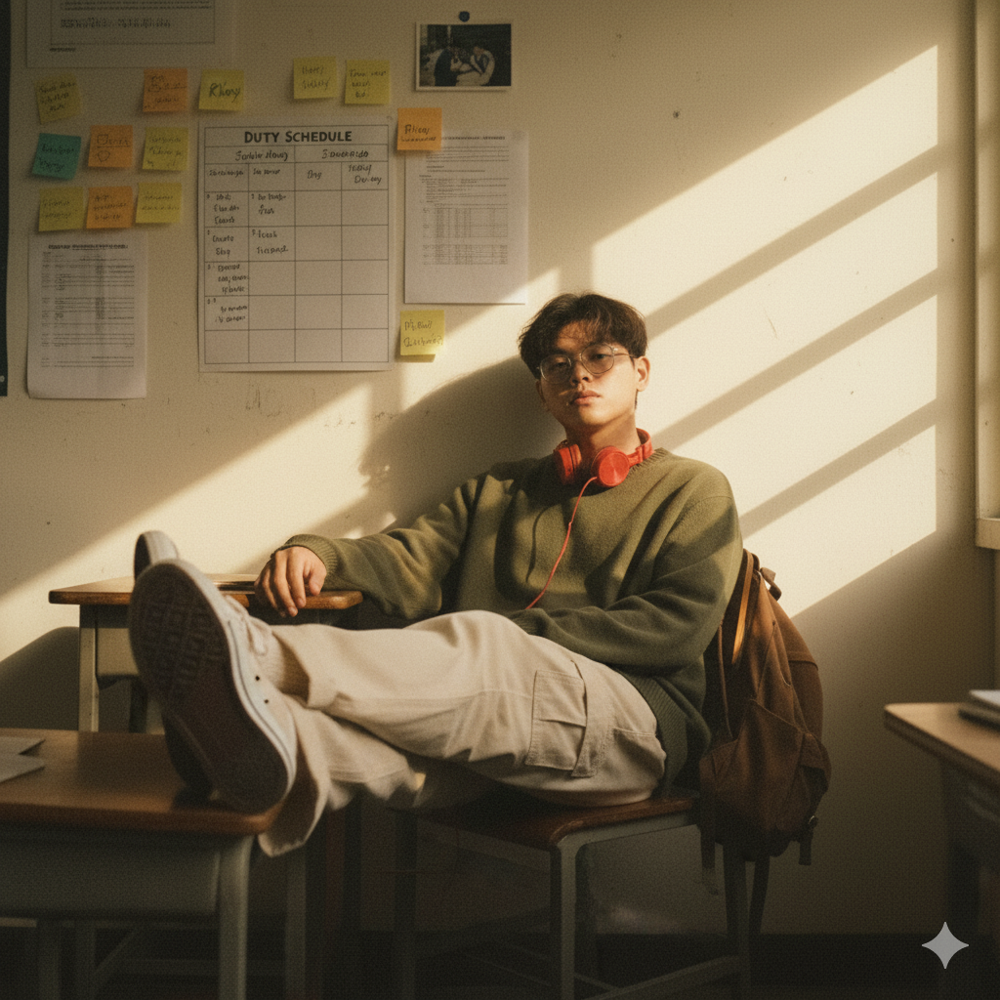
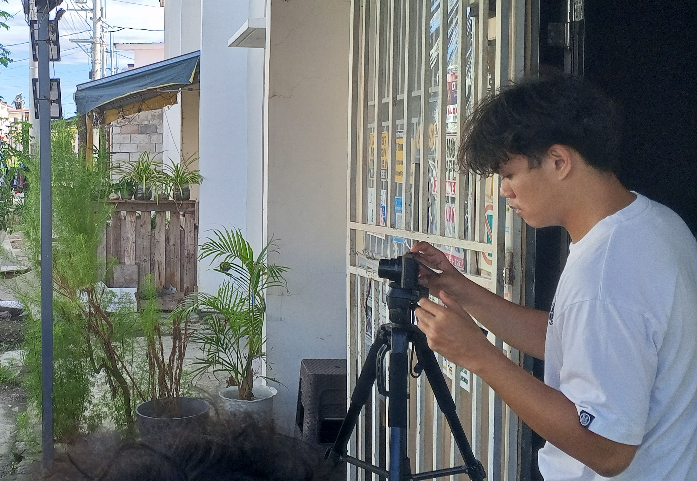

School 3D Logo
3D logo design and animation project.
Photographer, Videographer, Video Editor and Director. I shoot the frame, then cut the story.


I started with a Mobile Phone camera and a free editing app. Years later I still care about the same things: where the light falls and what to leave out of the frame.
I shoot Cinematic films, Film events, Portraits, Short documentaries, and Video Projects then edit the footage myself so the story holds together from the first click to the final export.
3D logo design and animation project.

A video project showcasing entrepreneurship.

A collaborative multimedia project.

A creative video project featuring the Pawikan Festival.

A multimedia project featuring Sagip Youth.
Find my accounts